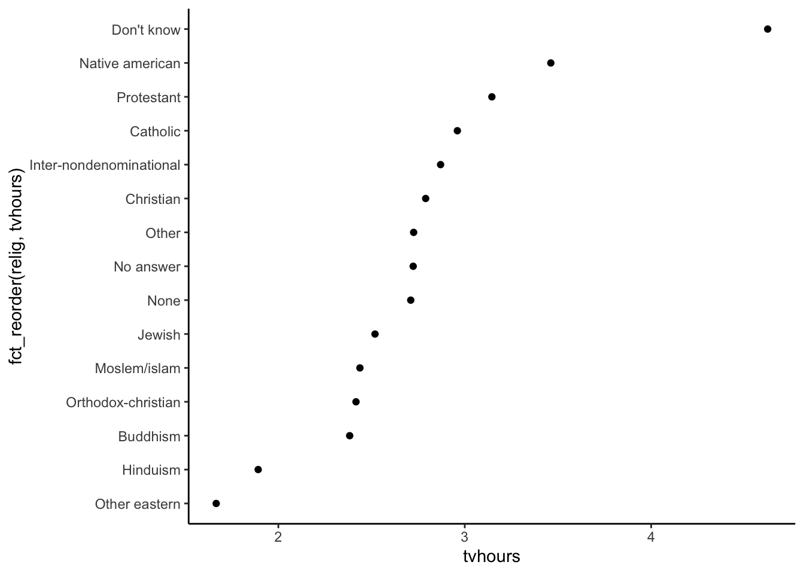
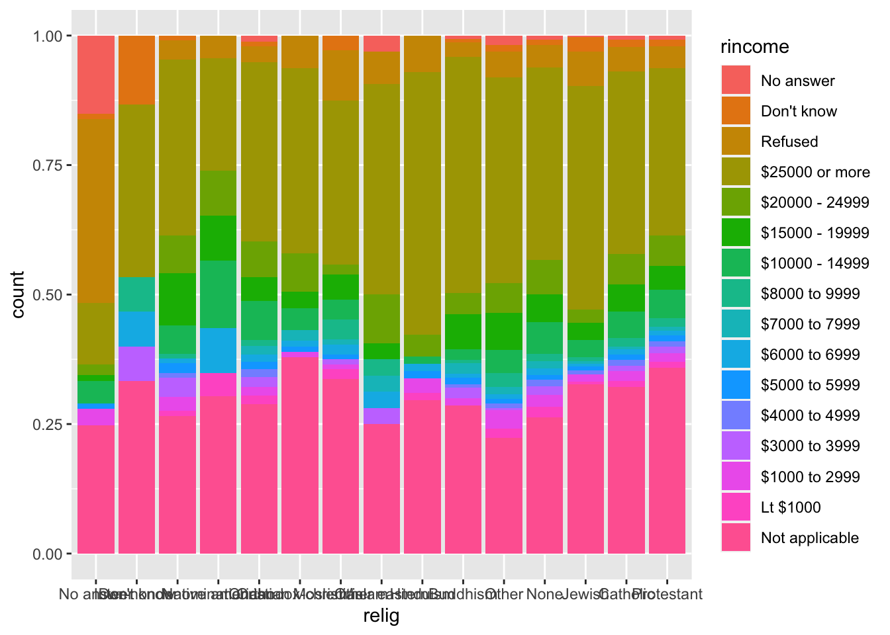
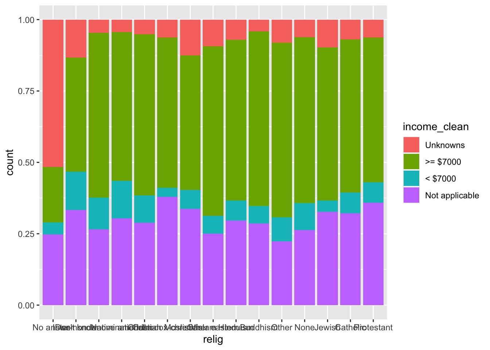

Determine the class of a given object and identify concerns to be wary of when manipulating an object of that class (numerics, logicals, factors, dates, strings, data.frames)
Explain what vector recycling is, when it can be a problem, and how to avoid those problems
Use a variety of functions to wrangle numerical and logical data
Extract date-time information using the lubridate package
Use the forcats package to wrangle factor data
You can download a template Quarto file to start from here. Put this file in a folder called wrangling within a folder for this course.
Helpful cheatsheets
RStudio (Posit) maintains a collection of wonderful cheatsheets. The following will be h
An atomic vector is a storage container in R where all elements in the container are of the same type. The types that are relevant to data science are:
logical
integer
real (or numeric)
string (or character)
date and date-time
factor
Function documentation will refer to vectors frequently. Examples:
ggplot2::scale_x_continuous()
breaks: A numeric vector of positions
labels: A character vector giving labels (must be same length as breaks)
shiny::sliderInput()
value: The initial value of the slider […] A length one vector will create a regular slider; a length two vector will create a double-ended range slider.
When you need a vector, you will almost always create one by:
[1] Ideal Premium Good Very Good Fair
Levels: Fair < Good < Very Good < Premium < Ideal
Logicals
What does a logical vector look like?
x <-c(TRUE, FALSE, NA)x
[1] TRUE FALSE NA
class(x)
[1] "logical"
You will often create logical vectors with comparison operators: >, <, <=, >=, ==, !=.
x <-c(1, 2, 9, 12)x <2
[1] TRUE FALSE FALSE FALSE
x <=2
[1] TRUE TRUE FALSE FALSE
x >9
[1] FALSE FALSE FALSE TRUE
x >=9
[1] FALSE FALSE TRUE TRUE
x ==12
[1] FALSE FALSE FALSE TRUE
x !=12
[1] TRUE TRUE TRUE FALSE
When you want to check for set containment, the %in% operator is the correct way to do this (as opposed to ==).
x <-c(1, 2, 9, 4)x==c(1, 2, 4)
Warning in x == c(1, 2, 4): longer object length is not a multiple of shorter
object length
[1] TRUE TRUE FALSE FALSE
x %in%c(1, 2, 4)
[1] TRUE TRUE FALSE TRUE
The Warning: longer object length is not a multiple of shorter object length is a manifestation of vector recycling. In R, if two vectors are being combined or compared, the shorter one will be repeated to match the length of the longer one–even if longer object length isn’t a multiple of the shorter object length. We can see the exact recycling that happens below:
x <-c(1, 2, 9, 4)x==c(1, 2, 4)
Warning in x == c(1, 2, 4): longer object length is not a multiple of shorter
object length
[1] TRUE TRUE FALSE FALSE
x==c(1, 2, 4, 1) # This line demonstrates the recycling that happens on the previous line
[1] TRUE TRUE FALSE FALSE
Logical vectors can also be created with functions. is.na() is one useful example:
x <-c(1, 4, 9, NA)x==NA
[1] NA NA NA NA
is.na(x)
[1] FALSE FALSE FALSE TRUE
We can negate a logical object with !. We can combine logical objects with & (and) and | (or).
x <-c(1, 2, 4, 9)x >1& x <5
[1] FALSE TRUE TRUE FALSE
!(x >1& x <5)
[1] TRUE FALSE FALSE TRUE
x <2| x >8
[1] TRUE FALSE FALSE TRUE
We can summarize logical vectors with:
any(): Are ANY of the values TRUE?
all(): Are ALL of the values TRUE?
sum(): How many of the values are TRUE?
mean(): What fraction of the values are TRUE?
x <-c(1, 2, 4, 9)any(x==1)
[1] TRUE
all(x <10)
[1] TRUE
sum(x==1)
[1] 1
mean(x==1)
[1] 0.25
if_else() and case_when() are functions that allow you to return values depending on the value of a logical vector. You’ll explore the documentation for these in the following exercises.
Exercises
Load the diamonds dataset, and filter to the first 1000 diamonds.
Subset to diamonds that are less than 400 dollars or more than 10000 dollars.
Subset to diamonds that are between 500 and 600 dollars (inclusive).
How many diamonds are of either Fair, Premium, or Ideal cut (a total count)? What fraction of diamonds are of Fair, Premium, or Ideal cut (a total count)?
First, do this a wrong way with ==. Predict the warning message that you will receive.
Second, do this the correct way with an appropriate logical operator.
Are there any diamonds of Fair cut that are more than $3000? Are all diamonds of Ideal cut more than $2000?
Create two new categorized versions of price by looking up the documentation for if_else() and case_when():
price_cat1: “low” if price is less than 500 and “high” otherwise
price_cat2: “low” if price is less than 500, “medium” if price is between 500 and 1000 dollars inclusive, and “high” otherwise.
Solution
# 1diamonds %>%filter(price <400| price >10000)
# A tibble: 30 × 10
carat cut color clarity depth table price x y z
<dbl> <ord> <ord> <ord> <dbl> <dbl> <int> <dbl> <dbl> <dbl>
1 0.23 Ideal E SI2 61.5 55 326 3.95 3.98 2.43
2 0.21 Premium E SI1 59.8 61 326 3.89 3.84 2.31
3 0.23 Good E VS1 56.9 65 327 4.05 4.07 2.31
4 0.29 Premium I VS2 62.4 58 334 4.2 4.23 2.63
5 0.31 Good J SI2 63.3 58 335 4.34 4.35 2.75
6 0.24 Very Good J VVS2 62.8 57 336 3.94 3.96 2.48
7 0.24 Very Good I VVS1 62.3 57 336 3.95 3.98 2.47
8 0.26 Very Good H SI1 61.9 55 337 4.07 4.11 2.53
9 0.22 Fair E VS2 65.1 61 337 3.87 3.78 2.49
10 0.23 Very Good H VS1 59.4 61 338 4 4.05 2.39
# ℹ 20 more rows
# 2diamonds %>%filter(price >=500, price <=600)
# A tibble: 90 × 10
carat cut color clarity depth table price x y z
<dbl> <ord> <ord> <ord> <dbl> <dbl> <int> <dbl> <dbl> <dbl>
1 0.35 Ideal I VS1 60.9 57 552 4.54 4.59 2.78
2 0.3 Premium D SI1 62.6 59 552 4.23 4.27 2.66
3 0.3 Ideal D SI1 62.5 57 552 4.29 4.32 2.69
4 0.3 Ideal D SI1 62.1 56 552 4.3 4.33 2.68
5 0.42 Premium I SI2 61.5 59 552 4.78 4.84 2.96
6 0.28 Ideal G VVS2 61.4 56 553 4.19 4.22 2.58
7 0.32 Ideal I VVS1 62 55.3 553 4.39 4.42 2.73
8 0.31 Very Good G SI1 63.3 57 553 4.33 4.3 2.73
9 0.31 Premium G SI1 61.8 58 553 4.35 4.32 2.68
10 0.24 Premium E VVS1 60.7 58 553 4.01 4.03 2.44
# ℹ 80 more rows
# 3## Wrong way with ==diamonds %>%mutate(is_fpi = cut==c("Fair", "Premium", "Ideal")) %>%summarize(num_fpi =sum(is_fpi), frac_fpi =mean(is_fpi))
Warning: There were 2 warnings in `mutate()`.
The first warning was:
ℹ In argument: `is_fpi = cut == c("Fair", "Premium", "Ideal")`.
Caused by warning in `==.default`:
! longer object length is not a multiple of shorter object length
ℹ Run `dplyr::last_dplyr_warnings()` to see the 1 remaining warning.
# A tibble: 1,000 × 12
carat cut color clarity depth table price x y z price_cat1
<dbl> <ord> <ord> <ord> <dbl> <dbl> <int> <dbl> <dbl> <dbl> <chr>
1 0.23 Ideal E SI2 61.5 55 326 3.95 3.98 2.43 low
2 0.21 Premium E SI1 59.8 61 326 3.89 3.84 2.31 low
3 0.23 Good E VS1 56.9 65 327 4.05 4.07 2.31 low
4 0.29 Premium I VS2 62.4 58 334 4.2 4.23 2.63 low
5 0.31 Good J SI2 63.3 58 335 4.34 4.35 2.75 low
6 0.24 Very Good J VVS2 62.8 57 336 3.94 3.96 2.48 low
7 0.24 Very Good I VVS1 62.3 57 336 3.95 3.98 2.47 low
8 0.26 Very Good H SI1 61.9 55 337 4.07 4.11 2.53 low
9 0.22 Fair E VS2 65.1 61 337 3.87 3.78 2.49 low
10 0.23 Very Good H VS1 59.4 61 338 4 4.05 2.39 low
# ℹ 990 more rows
# ℹ 1 more variable: price_cat2 <chr>
Numerics
Numerical data can be of class integer or numeric (representing real numbers).
x <-1:3x
[1] 1 2 3
class(x)
[1] "integer"
x <-c(1+1e-9, 2, 3)x
[1] 1 2 3
class(x)
[1] "numeric"
The Numbers chapter in R4DS covers the following functions that are all useful for wrangling numeric data:
n(), n_distinct(): Counting and counting the number of unique values
sum(is.na()): Counting the number of missing values
min(), max()
pmin(), pmax(): Get the min and max across several vectors
Integer division: %/%. Remainder: %%
121 %/% 100 = 1 and 121 %% 100 = 21
round(), floor(), ceiling(): Rounding functions (to a specified number of decimal places, to the largest integer below a number, to the smallest integer above a number)
Note that all numerical summary functions have an na.rm argument that should be set to TRUE if you have missing data.
The best way to add these functions and operators to your vocabulary is to need to recall them. Refer to the list of functions above as you try the following exercise. You will need to reference function documentation to look at arguments and look in the Examples section.
Exercises
Install the nycflights13 package for the data used in this exercise. You can look at the codebook for the flights dataset with ?flights. Each case represents one flight from a NYC airport in 2013.
library(nycflights13)data(flights)
Using the flights dataset, complete the following:
What is the most common departure hour? Use the dep_time variable.
Make a plot of the distribution of the largest delay for each flight (the larger of dep_delay and arr_delay).
Which origin airport had the longest average delay? Should you use dep_delay or arr_delay here? Which had the largest proportion of missing values for this delay variable?
Which destination (dest) airport had the largest variability in delays in terms of the difference between the 25th and 75th percentiles? Should you use dep_delay or arr_delay here?
Delays are typically temporally correlated: even once the problem that caused the initial delay has been resolved, later flights are delayed to allow earlier flights to leave. Use lag() to explore how the average departure delay for an hour is related to the average departure delay for the previous hour.
The lubridate package contains useful functions for working with dates and times. The lubridatefunction reference is a useful resource for finding the functions you need. We’ll take a brief tour of this reference page.
We’ll use the lakers dataset in the lubridate package to illustrate some examples.
lakers <-as_tibble(lakers)head(lakers)
# A tibble: 6 × 13
date opponent game_type time period etype team player result points type
<int> <chr> <chr> <chr> <int> <chr> <chr> <chr> <chr> <int> <chr>
1 2.01e7 POR home 12:00 1 jump… OFF "" "" 0 ""
2 2.01e7 POR home 11:39 1 shot LAL "Pau … "miss… 0 "hoo…
3 2.01e7 POR home 11:37 1 rebo… LAL "Vlad… "" 0 "off"
4 2.01e7 POR home 11:25 1 shot LAL "Dere… "miss… 0 "lay…
5 2.01e7 POR home 11:23 1 rebo… LAL "Pau … "" 0 "off"
6 2.01e7 POR home 11:22 1 shot LAL "Pau … "made" 2 "hoo…
# ℹ 2 more variables: x <int>, y <int>
Below we use date-time parsing functions to represent the date and time variables with date-time classes:
In R, factors are made up of two components: the actual values of the data and the possible levels within the factor. Creating a factor requires supplying both pieces of information.
months <-c("Mar", "Dec", "Jan", "Apr", "Jul")
However, if we were to sort this vector, R would sort this vector alphabetically.
# alphabetical sortsort(months)
[1] "Apr" "Dec" "Jan" "Jul" "Mar"
We can fix this sorting by creating a factor version of months. The levels argument is a character vector that specifies the unique values that the factor can take. The order of the values in levels defines the sorting of the factor.
months_fct <-factor(months, levels = month.abb) # month.abb is a built-in variablemonths_fct
[1] Mar Dec Jan Apr Jul
Levels: Jan Feb Mar Apr May Jun Jul Aug Sep Oct Nov Dec
sort(months_fct)
[1] Jan Mar Apr Jul Dec
Levels: Jan Feb Mar Apr May Jun Jul Aug Sep Oct Nov Dec
We can access the levels of a factor with levels():
[1] <NA> Mar
Levels: Jan Feb Mar Apr May Jun Jul Aug Sep Oct Nov Dec
Because the NA is introduced silently (without any error or warnings), this can be dangerous. It might be better to use the fct() function in the forcats package instead:
fct(months2, levels = month.abb)
Error in `fct()`:
! All values of `x` must appear in `levels` or `na`
ℹ Missing level: "Jna"
Exercise: Create a factor version of the following data with the levels in a sensible order.
The first argument is the factor that you want to reorder the levels of
The second argument determines how the factor is sorted (analogous to what you put inside arrange() when sorting the rows of a data frame.)
ggplot(relig_summary, aes(x = tvhours, y =fct_reorder(relig, tvhours))) +geom_point() +theme_classic()

For bar plots, we can use fct_infreq() to reorder levels from most to least common. This can be combined with fct_rev() to reverse the order (least to most common):
We talked about reordering the levels of a factor–what about changing the values of the levels themselves?
For example, the names of the political parties in the GSS could use elaboration (“str” isn’t a great label for “strong”) and clean up:
gss_cat %>%count(partyid)
# A tibble: 10 × 2
partyid n
<fct> <int>
1 No answer 154
2 Don't know 1
3 Other party 393
4 Strong republican 2314
5 Not str republican 3032
6 Ind,near rep 1791
7 Independent 4119
8 Ind,near dem 2499
9 Not str democrat 3690
10 Strong democrat 3490
We can use fct_recode() on partyid with the new level names going on the left and the old levels on the right. Any levels that aren’t mentioned explicitly (i.e., “Don’t know” and “Other party”) will be left as is:
# A tibble: 21,483 × 9
year marital age race rincome partyid relig denom tvhours
<int> <fct> <int> <fct> <fct> <fct> <fct> <fct> <int>
1 2000 Never married 26 White $8000 to 9999 Independe… Prot… Sout… 12
2 2000 Divorced 48 White $8000 to 9999 Republica… Prot… Bapt… NA
3 2000 Widowed 67 White Not applicable Independe… Prot… No d… 2
4 2000 Never married 39 White Not applicable Independe… Orth… Not … 4
5 2000 Divorced 25 White Not applicable Democrat,… None Not … 1
6 2000 Married 25 White $20000 - 24999 Democrat,… Prot… Sout… NA
7 2000 Never married 36 White $25000 or more Republica… Chri… Not … 3
8 2000 Divorced 44 White $7000 to 7999 Independe… Prot… Luth… NA
9 2000 Married 44 White $25000 or more Democrat,… Prot… Other 0
10 2000 Married 47 White $25000 or more Republica… Prot… Sout… 3
# ℹ 21,473 more rows
We can use fct_collapse() to collapse many levels:
# Beforeggplot(gss_cat, aes(x = relig, fill = rincome)) +geom_bar(position ="fill")

# Aftergss_cat %>%mutate(income_clean =fct_collapse(rincome,"Unknowns"=c("No answer", "Don't know", "Refused"),"< $7000"=c("Lt $1000", "$1000 to 2999", "$3000 to 3999", "$4000 to 4999", "$5000 to 5999", "$6000 to 6999"),">= $7000"=c("$7000 to 7999", "$8000 to 9999", "$10000 - 14999", "$15000 - 19999", "$20000 - 24999", "$25000 or more") ) ) %>%ggplot(aes(x = relig, fill = income_clean)) +geom_bar(position ="fill")

Reflection
In your personal class journal, write some observations about how our tools today felt. What was challenging? What was easier? What ideas do you have for keeping track of the many functions relevant to data wrangling?
Annoucements
Check our Schedule for 3 more chapters to read in R4DS for Thursday.